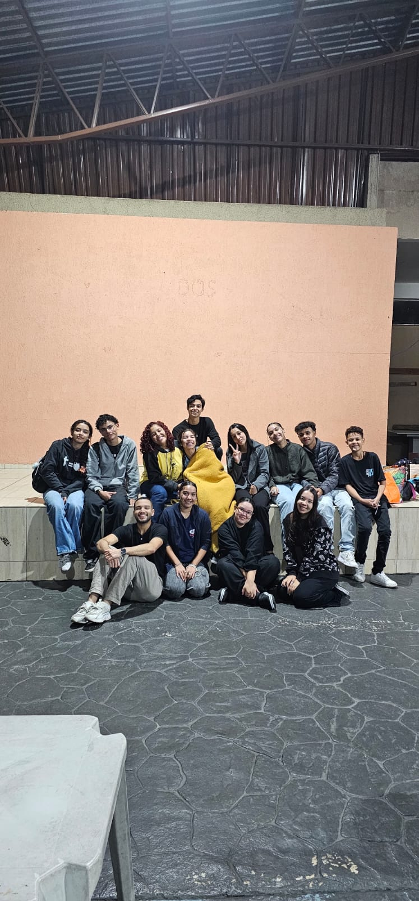
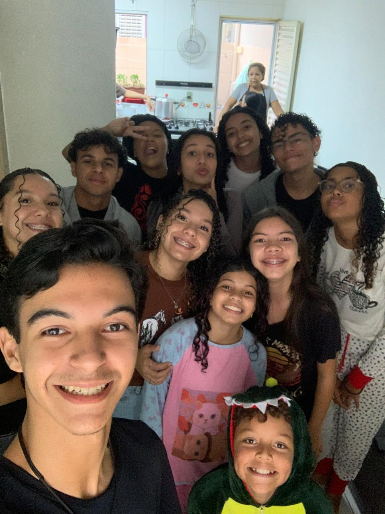

Missão
Criar um refúgio e uma comunidade real de amigos que se apoiam mútuamente na oração, nos sacramentos e, claro, nos momentos de lazer
Sociedade dos Nerds Católicos
Somos um grupo de jovens que entendeu que a fé e a razão caminham juntas — e que dá, sim, para amar a Deus enquanto discutimos cultura pop, ficção científica, teologia !.
Conheça nosso grupoA Sociedade dos Nerds Católicos é um grupo de pessoas que acredita em trabalho colaborativo, aprendizado contínuo.

Criar um refúgio e uma comunidade real de amigos que se apoiam mútuamente na oração, nos sacramentos e, claro, nos momentos de lazer
Acolher e engajar jovens que se identificam com o universo nerd, tornando-se um porto seguro de amizade cristã, estudo profundo da fé e serviço à Igreja, expandindo nossa voz para além dos limites da paróquia.
União, respeito, criatividade, fé.
.Somos a SNC, Sociedade dos Nerds Católicos, criada em 2025 por um grupo de amigos que buscam o fortalecimento na fé, o conhecimento sobre o catolicismo, e, acima de tudo, amar a Deus! O grupo surgiu após uma missão paroquial onde nossos integrantes Pedro, Sarah, Alana, Laura L., Ana e Wolliver se juntaram, mas, o nome “SNC” surgiu após alguns meses quando a Sarah decidiu que seríamos os nerds católicos, que gostamos de nossas nerdices mas ao mesmo tempo do catolicismo. Ao passar do tempo, mais integrantes se juntaram a nossa sociedade
Alguns momentos que representam a nossa caminhada, amizade e presença uns com os outros.



Conheça quem faz parte do SNC e como cada pessoa contribui para o nosso grupo.
Se você gosta de conversar sobre fé, cultura pop, filmes, games e viver em comunidade, este espaço é para você.
Nosso grupo é um lugar de amizade, reflexão e muita boa companhia. Se quiser acompanhar nossas atividades e participar, venha conversar conosco no Instagram: @sociedadecatolicos_